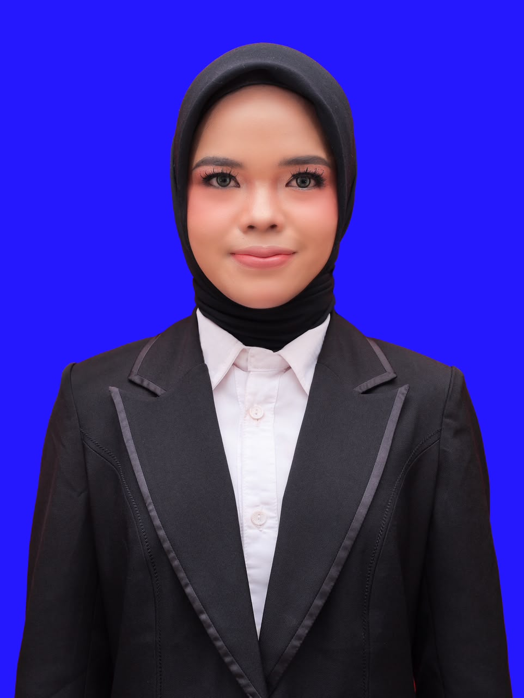

Contacts
evitadamayantihasibuan@gmail.com
telpon.
+62 822-2519-3240
Hard Skills
EDITING FOTO
Canva
Desain Grafis
Microsoft Office
Soft Skills
Team work
Public Speaking
Education
Critical Thinking
Content creator
Team Leadership
Communications
Organization skill
COPY WRITING
media social
Leadership
Evita Damayanti hasibuan
Huraba I, Kec.Siabu, Kab. Mandailing Natal, Sumatera Utara

Education
Pendidikan Luar Biasa
Universitas Negri Padang(UNP)- Padang, Indonesia
2022-2026
377
Experience
Magang
SLBN MANDAILING NATAL - Kab. Mandailing Natal, Sumatera Utara, IndonesiaGuru
juli 2025 - Desember 2025
Menjalani magang selama 6 bulan sebagai pengajar di Sekolah Luar Biasa (SLB) Mandailing Natal, dengan tanggung jawab mengajar siswa dengan berbagai jenis ketunaan meliputi tunanetra, tunarungu, tunagrahita, tunadaksa, dan autisme.Merancang rencana pembelajaran serta media belajar yang disesuaikan secara individual dengan kebutuhan masing-masing siswa, turut terlibat dalam proses akreditasi sekolah, serta memimpin dan mengoordinasikan berbagai kegiatan sekolah termasuk penyelenggaraan lomba dan pendampingan siswa dalam kompetisi.
Languages
Indonesia ●●●●●
English ●●●●
Lulusan Pendidikan Luar Biasa (PLB) dengan IPK 3.77/4.00 (Cum Laude), memiliki minat dan pengalaman mendalam di bidang pendidikan inklusif. Selama masa perkuliahan, aktif melakukan observasi dan intervensi di berbagai sekolah inklusi untuk mendampingi murid berkebutuhan khusus yang bersekolah di sekolah reguler, serta memiliki pengalaman praktik terapi menggunakan metode Applied Behavior Analysis (ABA). Memperdalam kompetensi mengajar melalui magang intensif selama 6 bulan di SLB Negeri Mandailing Natal, mencakup pengalaman mengajar di seluruh jenjang kelas Tunanetra, Tunarungu, Tunagrahita, Tunadaksa, dan Autisme. Dalam proses tersebut, terlibat langsung dalam penyusunan bahan ajar dan media pembelajaran kreatif yang dirancang sesuai karakteristik dan kebutuhan belajar masing-masing murid berdasarkan jenis ketunaannya. Turut menguasai baca-tulis huruf Braille untuk mendukung proses pembelajaran murid Tunanetra. Selain itu, aktif berorganisasi sebagai Kepala Bidang IPTEK HMD PLB FIP UNP 2024, dengan pengalaman kepanitiaan di bidang Kesekretariatan serta Publikasi, Dokumentasi, dan Desain, serta pernah memimpin berbagai kegiatan kesiswaan di lingkungan SLB, termasuk Pramuka dan ajang perlombaan. Memiliki kemampuan komunikasi, kepemimpinan, dan adaptabilitas yang baik, didukung keterampilan desain grafis menggunakan Canva serta editing foto, dengan komitmen tinggi untuk berkontribusi di bidang pendidikan, sosial, maupun kreativitas digital.